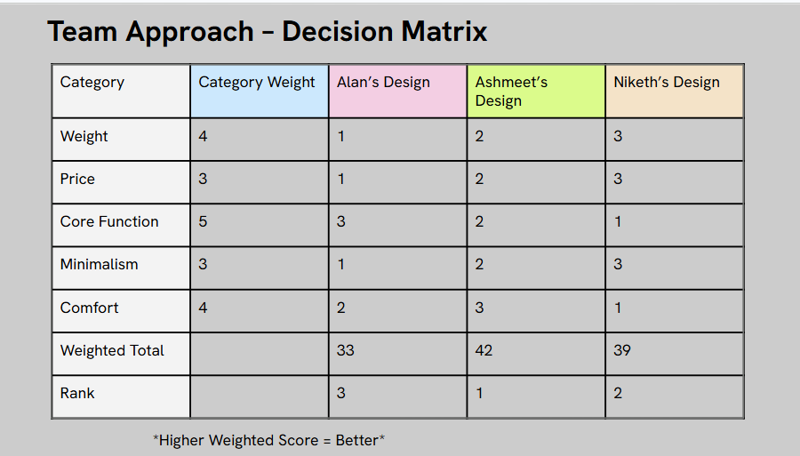
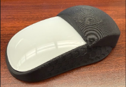
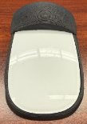

The final Magic Snap shell docked on its charging stand, team project with Ashmeet Bedi and Niketh Raghu ("Flow State").
Overview
Though the Apple Magic Mouse is sleek in appearance, it's inherently flawed due to three interrelated design issues. Its thinness forces the user into a constant "claw grip," which can cause forearm extensor strain. Its plastic skates create unnecessary friction against surfaces, making the mouse feel heavier than it should during use. And its rear-end charging port makes the mouse inoperable while charging and causes wear on the surface through progressive scratching.
View full presentation slides →
Design Constraints
- Added mass from the ergonomic shell and magnets must be offset by a reduced coefficient of friction.
- Must be able to remove and reinsert the mouse with ease.
- Must still be able to use multi-touch and gesture functionality.
- Sensor's tracking accuracy must remain unhindered and precise.
- Must be comfortable and ergonomically compliant for both short and long term usage.
- Must account for 3D-print shrinkage and tolerances to ensure a secure design.
Validating the Problem
Before committing to a design direction, we surveyed potential users to confirm the problem was worth solving.
Design Goals
This project aimed to solve all three problems through a complete redesign. The objective was a modular input device that allows for natural support from the palm arch, uses glass feet instead of plastic skates, and includes a docking station that charges the mouse vertically, removing downtime and surface damage altogether. All modifications were planned to maintain full functionality with the macOS multitouch system.
Concept Generation & Decision Matrix
Each team member independently sketched a concept, and we scored all three against weighted criteria: weight, price, core function, minimalism, and comfort, to pick a direction as a team. Ashmeet's design scored highest overall and became the foundation for the shared design that followed.
Each team member's individual concept sketch, submitted before the group decision matrix vote.

The weighted decision matrix used to choose a direction as a team. Ashmeet's design scored highest (42) and became the foundation for the shared design.
First Prototype
Our first print surfaced real fitment issues you can't catch in CAD alone: the top portion of the sides came out thin and weak, the internal supports under the rear hump occasionally obscured the mouse's click mechanism, and the rear hump itself was too aggressive for a full palm grip, being better suited to a fingertip or claw grip. Fitment was close but not quite there; the shell could have been wider.


CAD modeling for the first prototype: the rear hump and internal supports built directly around the mouse body.


First prototype: printed shell fitted onto the actual mouse for testing. The fitment issues above were identified here.
Second Prototype
The second round moved to a two-piece design: a separate base ring that clips around the mouse's body, and a hump shell that sits on top. This is also the version we shared publicly as an open-source model.
CAD models and print-preview meshes for the second prototype's two-piece hump-and-ring design.


Second prototype: printed hump in a dark textured finish, with the mouse's original glossy white housing showing through the front. View the open-source model on Printables →

Fitment and finish testing on the mouse, including underside views, an iridescent color test, and early cable-management experiments.
All interviews pointed to this version being noticeably more comfortable to use, and fitment was very good right off the print bed; only minor cleanup with an X-acto knife was needed. The one problem left unsolved was charging: Apple's Magic Mouse disables Bluetooth as soon as it detects a charge, so a real charging solution still needed to be designed.
Third Prototype
The third round, under the "Flow State" team name, focused on solving the charging problem. The two-piece hump-and-ring design was carried over and refined, then paired with a dedicated charging base designed to dock the mouse vertically.
Print-preview meshes for the third prototype's base ring and hump shell.
Third prototype: base ring and hump printed and assembled together, plus the base ring fitted on the mouse alone before the hump snaps on top.
We also tested a dedicated charging base printed separately from the mouse shell, but the print quality on these came out rougher than we'd hoped, and the base itself was too large, leaving the cable sitting too loose inside it. We also ran into a height problem: the charging connection needed extra clearance at the rear of the mouse, so we tested resting the hump on a raised riser block to check how much extra height would be needed.
Third prototype: charging base CAD design and early prints, with rougher finish and an oversized fit.
Final Prototype
The final shell kept the comfort of the refined hump and finalized the two-part magnetic design: a hump that snaps onto a base ring so it detaches for portability and leaves room for interchangeable hump shapes in the future. The hump's side wall was printed with a visible honeycomb texture, paired with the mouse's original glossy white housing showing through the front and underside. A dedicated vertical charging stand rounded out the system, letting the mouse dock and charge without being flipped over.
Print-preview meshes for the final hump and base ring.
The finished hump and base ring, shown apart to highlight the modular magnetic connection, plus the underside fitted onto the mouse.
The dedicated charging stand let the mouse dock and charge vertically, keeping the surface finish scratch-free and removing the downtime of flipping the mouse over to plug it in.
CAD design and printed version of the final charging stand.
Cost Breakdown
Per unit, our prototype cost effectively nothing thanks to lab filament and repurposed magnets, but pricing out full-scale components gives a realistic per-unit cost:
Future Plans
- Custom hump shapes: design differently shaped humps that magnetically snap onto the same base, letting users tailor the fit to their own hand.
- Smarter charging base: explore modular charging bases with added desk-tool functionality, like a built-in lamp, clock, or fan.
- Custom charging hardware: design our own wiring and connectors, including 3D-printed conductive paths, to cut manufacturing cost and improve reliability.
- Use while charging: override the mouse's default behavior of disabling Bluetooth while charging, so it stays usable on the dock.
What I Learned
Designing a model for a physical object was a completely new challenge, since I had to build the design around something material rather than starting from scratch. The process of exporting the model and printing it made me much more aware of parameters like infill density and support structures.
Reflection
This project made me realize how vital it is not to limit myself to a single type of solution, but to stay prepared to explore different directions when creating something new.